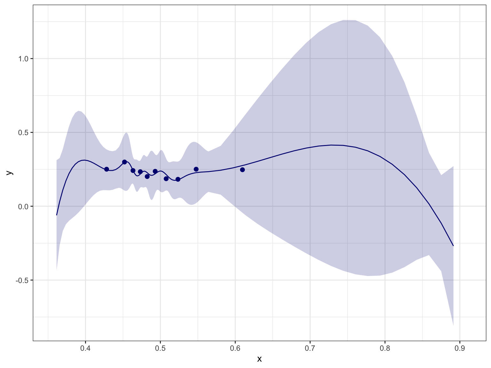
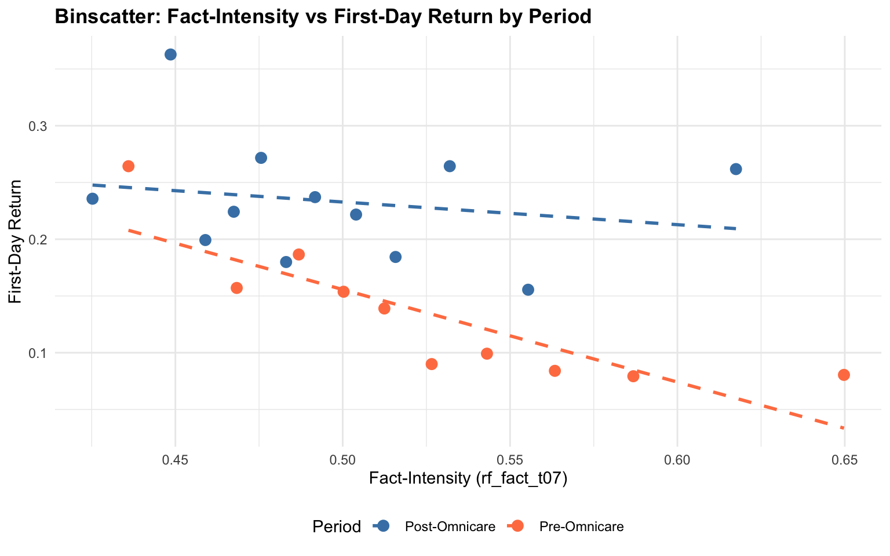
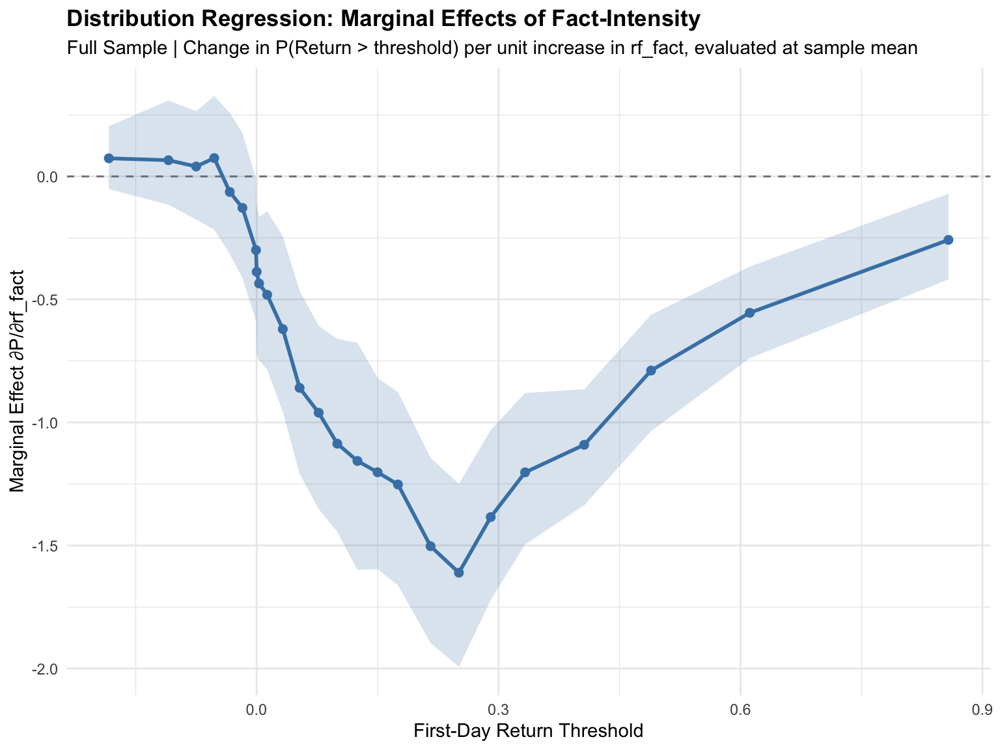
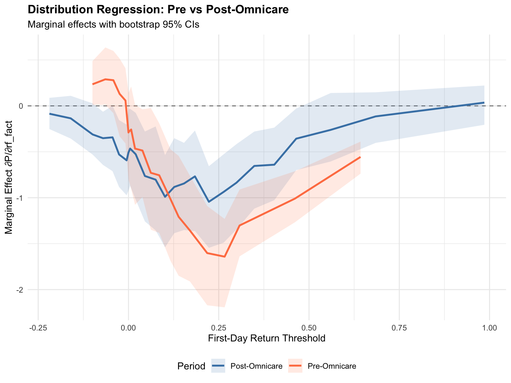

This document validates the BERT-based fact-intensity measure (rf_fact_t07) by examining its relationship with first-day IPO returns. The hypothesis is:
Higher fact-intensity in S-1 risk factor disclosures should be associated with lower first-day returns (less underpricing).
The intuition is that more factual disclosure reduces information asymmetry between issuers and investors, leading to more accurate pricing and smaller first-day “pops.”
We examine this relationship using three approaches:
Linear Regression: OLS of first-day return on fact-intensity
Binscatter: Non-parametric visualization using optimal binning (Cattaneo et al.)
Distribution Regression: Series of binary regressions at different return thresholds
Each analysis is conducted for:
Full sample
Pre-Omnicare (before March 24, 2015)
Post-Omnicare (March 24, 2015 and after)
Sample Restriction: We restrict the sample to IPOs with an offer price ≥ $5 to exclude penny stocks and very small offerings that may exhibit extreme volatility unrelated to disclosure quality.
Code
library(ggplot2)# Load datadf_raw <-read.csv("../data/omnicare_rf.csv")df <- df_raw[df_raw$offer_price >=5, ] # Restrict to offer price >= $5# Create post-Omnicare indicatordf$post_omnicare <-as.Date(df$offer_date) >=as.Date("2015-03-24")df$period <-ifelse(df$post_omnicare, "Post-Omnicare", "Pre-Omnicare")# ============================================================================# Fama-French 12 Industry Classification# Source: Kenneth French Data Library# https://mba.tuck.dartmouth.edu/pages/faculty/ken.french/Data_Library/det_12_ind_port.html# ============================================================================assign_ff12 <-function(sic) {# Returns Fama-French 12 industry classification based on SIC code# Returns NA if SIC is missingif (is.na(sic)) return(NA_character_) sic <-as.integer(sic)# 1. Consumer NonDurablesif ((sic >=100& sic <=999) | (sic >=2000& sic <=2399) | (sic >=2700& sic <=2749) | (sic >=2770& sic <=2799) | (sic >=3100& sic <=3199) | (sic >=3940& sic <=3989)) {return("NoDur") }# 2. Consumer Durablesif ((sic >=2500& sic <=2519) | (sic >=2590& sic <=2599) | (sic >=3630& sic <=3659) | (sic >=3710& sic <=3711) | (sic ==3714) | (sic ==3716) | (sic >=3750& sic <=3751) | (sic ==3792) | (sic >=3900& sic <=3939) | (sic >=3990& sic <=3999)) {return("Durbl") }# 3. Manufacturingif ((sic >=2520& sic <=2589) | (sic >=2600& sic <=2699) | (sic >=2750& sic <=2769) | (sic >=3000& sic <=3099) | (sic >=3200& sic <=3569) | (sic >=3580& sic <=3629) | (sic >=3700& sic <=3709) | (sic >=3712& sic <=3713) | (sic ==3715) | (sic >=3717& sic <=3749) | (sic >=3752& sic <=3791) | (sic >=3793& sic <=3799) | (sic >=3830& sic <=3839) | (sic >=3860& sic <=3899)) {return("Manuf") }# 4. Energy (Oil, Gas, Coal)if ((sic >=1200& sic <=1399) | (sic >=2900& sic <=2999)) {return("Enrgy") }# 5. Chemicalsif ((sic >=2800& sic <=2829) | (sic >=2840& sic <=2899)) {return("Chems") }# 6. Business Equipment (Computers, Software, Electronics)if ((sic >=3570& sic <=3579) | (sic >=3660& sic <=3692) | (sic >=3694& sic <=3699) | (sic >=3810& sic <=3829) | (sic >=7370& sic <=7379)) {return("BusEq") }# 7. Telecommunicationsif (sic >=4800& sic <=4899) {return("Telcm") }# 8. Utilitiesif (sic >=4900& sic <=4949) {return("Utils") }# 9. Wholesale/Retail (Shops)if ((sic >=5000& sic <=5999) | (sic >=7200& sic <=7299) | (sic >=7600& sic <=7699)) {return("Shops") }# 10. Healthcare (Medical Equipment, Drugs)if ((sic >=2830& sic <=2839) | (sic ==3693) | (sic >=3840& sic <=3859) | (sic >=8000& sic <=8099)) {return("Hlth") }# 11. Financeif (sic >=6000& sic <=6999) {return("Money") }# 12. Otherreturn("Other")}# Apply FF12 classificationdf$ff12 <-sapply(df$sic_code, assign_ff12)df$ff12 <-factor(df$ff12, levels =c("NoDur", "Durbl", "Manuf", "Enrgy", "Chems","BusEq", "Telcm", "Utils", "Shops", "Hlth","Money", "Other"))# Log-transform size variables (adding small constant to avoid log(0))df$log_assets <-log(df$assets_thous +1)df$log_proceeds <-log(df$total_proceeds_thous +1)# Sample sizescat("Sample restriction: offer_price >= $5\n")
Binscatter provides a non-parametric visualization of the conditional expectation function.
Note on Implementation: For IMSE-optimal binning, install the binsreg package from Cattaneo, Crump, Farrell, and Feng (2024). The implementation below uses a simplified quantile-based approach with the number of bins set via the rule-of-thumb \(J \approx \lceil n^{1/3} \rceil\).
Code
# Check if binsreg is available; if not, use quantile-based fallbackuse_binsreg <-requireNamespace("binsreg", quietly =TRUE)if (use_binsreg) {cat("Using binsreg package for IMSE-optimal binning\n")} else {cat("binsreg not available; using quantile-based binning (ROT: n^(1/3) bins)\n")}
Using binsreg package for IMSE-optimal binning
Code
# Binscatter function with binsreg or fallbackbinscatter <-function(data, x_var, y_var, n_bins =NULL, title ="") { x <- data[[x_var]] y <- data[[y_var]]# Remove missing values complete <-complete.cases(x, y) x <- x[complete] y <- y[complete] n <-length(x)# If binsreg available, use itif (use_binsreg) {library(binsreg) result <-binsreg(y, x, line =c(3, 3), cb =c(3, 3))return(list(plot = result$bins_plot, binsreg_output = result)) }# Fallback: Rule-of-thumb number of bins (Cattaneo et al. suggest n^(1/3))if (is.null(n_bins)) { n_bins <-ceiling(n^(1/3)) }# Create quantile-based bins breaks <-quantile(x, probs =seq(0, 1, length.out = n_bins +1), na.rm =TRUE) breaks <-unique(breaks) # Handle ties bins <-cut(x, breaks = breaks, include.lowest =TRUE, labels =FALSE)# Compute bin means bin_means <-aggregate(cbind(x_mean = x, y_mean = y),by =list(bin = bins),FUN = mean,na.rm =TRUE )# Linear fit for overlay fit <-lm(y ~ x)# Create plot p <-ggplot() +geom_point(data = bin_means, aes(x = x_mean, y = y_mean),size =3, color ="steelblue") +geom_abline(intercept =coef(fit)[1], slope =coef(fit)[2],color ="darkred", linewidth =1, linetype ="dashed") +labs(title = title,subtitle =paste0("N = ", n, " | Bins = ", length(unique(bins))," (ROT: n^1/3) | Slope = ", round(coef(fit)[2], 4)),x ="Fact-Intensity (rf_fact_t07)",y ="First-Day Return" ) +theme_minimal() +theme(plot.title =element_text(face ="bold", size =14),plot.subtitle =element_text(size =10, color ="gray40") )return(list(plot = p, bin_data = bin_means, fit = fit))}
[1] "Note: Setting at least nsims=2000 and simsgrid=50 is recommended to obtain the final results."
Binscatter: Fact-Intensity vs First-Day Return (Post-Omnicare)
Code
print(bs_post$plot)

Binscatter: Fact-Intensity vs First-Day Return (Post-Omnicare)
Combined Panel
Code
# Create binned data for both periods (using ROT: n^(1/3) bins)create_bin_data <-function(data) { x <- data$rf_fact_t07 y <- data$first_day_return n_bins <-ceiling(length(x)^(1/3)) # ROT from Cattaneo et al. breaks <-quantile(x, probs =seq(0, 1, length.out = n_bins +1), na.rm =TRUE) breaks <-unique(breaks) bins <-cut(x, breaks = breaks, include.lowest =TRUE, labels =FALSE) bin_means <-aggregate(cbind(x_mean = x, y_mean = y),by =list(bin = bins),FUN = mean, na.rm =TRUE )return(bin_means)}bin_pre <-create_bin_data(df[!df$post_omnicare, ])bin_pre$period <-"Pre-Omnicare"bin_post <-create_bin_data(df[df$post_omnicare, ])bin_post$period <-"Post-Omnicare"bin_combined <-rbind(bin_pre, bin_post)ggplot(bin_combined, aes(x = x_mean, y = y_mean, color = period)) +geom_point(size =3) +geom_smooth(method ="lm", se =FALSE, linetype ="dashed") +scale_color_manual(values =c("Pre-Omnicare"="coral", "Post-Omnicare"="steelblue")) +labs(title ="Binscatter: Fact-Intensity vs First-Day Return by Period",x ="Fact-Intensity (rf_fact_t07)",y ="First-Day Return",color ="Period" ) +theme_minimal() +theme(legend.position ="bottom",plot.title =element_text(face ="bold") )
`geom_smooth()` using formula = 'y ~ x'

Binscatter by Period
3. Distribution Regression
Distribution regression estimates the effect of fact-intensity on the probability of exceeding various return thresholds. This provides a more complete picture of how fact-intensity shifts the entire distribution of returns, not just the mean.
For each threshold \(\tau\), we estimate a logistic regression: \[P(\text{FirstDayReturn}_i > \tau) = \Lambda(\alpha_\tau + \beta_\tau \cdot \text{rf\_fact\_t07}_i)\]
where \(\Lambda(\cdot)\) is the logistic CDF. We report marginal effects evaluated at the sample mean: \[\frac{\partial P(Y > \tau | X = \bar{x})}{\partial x} = \beta_\tau \cdot \Lambda(\alpha_\tau + \beta_\tau \bar{x}) \cdot (1 - \Lambda(\alpha_\tau + \beta_\tau \bar{x}))\]
If higher fact-intensity reduces returns, we expect negative marginal effects (lower probability of exceeding any given threshold).
Code
# Distribution regression: series of binary regressions with marginal effectsdistribution_regression <-function(data, x_var, y_var,thresholds =NULL, n_thresholds =20,n_bootstrap =200) { x <- data[[x_var]] y <- data[[y_var]]# Remove missing values complete <-complete.cases(x, y) x <- x[complete] y <- y[complete] n <-length(x)# Evaluation point: sample mean of x x_mean <-mean(x, na.rm =TRUE)# Default thresholds: quantiles of yif (is.null(thresholds)) { thresholds <-quantile(y, probs =seq(0.05, 0.95, length.out = n_thresholds), na.rm =TRUE) thresholds <-unique(thresholds) } results <-data.frame(threshold =numeric(),coefficient =numeric(),marginal_effect =numeric(),me_lower =numeric(),me_upper =numeric(),prop_above =numeric() )for (tau in thresholds) {# Binary outcome: 1 if y > tau y_binary <-as.integer(y > tau)# Skip if all same valueif (length(unique(y_binary)) <2) next# Logistic regression model <-glm(y_binary ~ x, family =binomial(link ="logit")) coefs <-coef(model)if (any(is.na(coefs)) ||length(coefs) <2) next# Marginal effect at sample mean: β * λ(Xβ) * (1 - λ(Xβ)) linear_pred <- coefs[1] + coefs[2] * x_mean lambda_val <-plogis(linear_pred) marginal_effect <- coefs[2] * lambda_val * (1- lambda_val)# Bootstrap for confidence intervals boot_me <-numeric(n_bootstrap)for (b in1:n_bootstrap) {# Weighted bootstrap (exponential weights) weights <-rexp(n, rate =1)tryCatch({ boot_fit <-glm(y_binary ~ x, family =binomial(link ="logit"), weights = weights) boot_coefs <-coef(boot_fit)if (!any(is.na(boot_coefs)) &&length(boot_coefs) >=2) { boot_lp <- boot_coefs[1] + boot_coefs[2] * x_mean boot_lambda <-plogis(boot_lp) boot_me[b] <- boot_coefs[2] * boot_lambda * (1- boot_lambda) } else { boot_me[b] <-NA } }, error =function(e) { boot_me[b] <-NA }) }# Calculate bootstrap CI boot_me_clean <- boot_me[!is.na(boot_me)]if (length(boot_me_clean) >10) { me_lower <-quantile(boot_me_clean, 0.025) me_upper <-quantile(boot_me_clean, 0.975) } else { me_lower <-NA me_upper <-NA } results <-rbind(results, data.frame(threshold = tau,coefficient = coefs[2],marginal_effect = marginal_effect,me_lower = me_lower,me_upper = me_upper,prop_above =mean(y_binary, na.rm =TRUE) )) }return(results)}
Full Sample
Code
dr_full <-distribution_regression(df, "rf_fact_t07", "first_day_return", n_thresholds =25)ggplot(dr_full, aes(x = threshold, y = marginal_effect)) +geom_hline(yintercept =0, linetype ="dashed", color ="gray50") +geom_ribbon(aes(ymin = me_lower, ymax = me_upper),alpha =0.2, fill ="steelblue") +geom_line(color ="steelblue", linewidth =1) +geom_point(color ="steelblue", size =2) +labs(title ="Distribution Regression: Marginal Effects of Fact-Intensity",subtitle ="Full Sample | Change in P(Return > threshold) per unit increase in rf_fact, evaluated at sample mean",x ="First-Day Return Threshold",y ="Marginal Effect ∂P/∂rf_fact" ) +theme_minimal() +theme(plot.title =element_text(face ="bold"))

Distribution Regression Marginal Effects (Full Sample)
Distribution Regression Marginal Effects (Post-Omnicare)
Combined Comparison
Code
dr_pre$period <-"Pre-Omnicare"dr_post$period <-"Post-Omnicare"dr_combined <-rbind(dr_pre, dr_post)ggplot(dr_combined, aes(x = threshold, y = marginal_effect, color = period, fill = period)) +geom_hline(yintercept =0, linetype ="dashed", color ="gray50") +geom_ribbon(aes(ymin = me_lower, ymax = me_upper),alpha =0.15, color =NA) +geom_line(linewidth =1) +scale_color_manual(values =c("Pre-Omnicare"="coral", "Post-Omnicare"="steelblue")) +scale_fill_manual(values =c("Pre-Omnicare"="coral", "Post-Omnicare"="steelblue")) +labs(title ="Distribution Regression: Pre vs Post-Omnicare",subtitle ="Marginal effects with bootstrap 95% CIs",x ="First-Day Return Threshold",y ="Marginal Effect ∂P/∂rf_fact",color ="Period",fill ="Period" ) +theme_minimal() +theme(legend.position ="bottom",plot.title =element_text(face ="bold") )

Distribution Regression Marginal Effects by Period
4. Summary and Interpretation
Code
cat("=== LINEAR REGRESSION SUMMARY ===\n\n")
=== LINEAR REGRESSION SUMMARY ===
Code
for (i in1:nrow(ols_results)) { sign <-ifelse(ols_results$Coefficient[i] <0, "NEGATIVE", "POSITIVE") sig <-ifelse(ols_results$p_value[i] <0.05, "(significant at 5%)", "(not significant at 5%)")cat(sprintf("%s: beta = %.4f %s\n", ols_results$Sample[i], ols_results$Coefficient[i], sig))}
Full Sample: beta = -0.6173 (significant at 5%)
Pre-Omnicare: beta = -0.7306 (significant at 5%)
Post-Omnicare: beta = -0.1969 (not significant at 5%)
Code
cat("\n=== INTERPRETATION ===\n\n")
=== INTERPRETATION ===
Code
# Check if hypothesis is supportedfull_coef <-coef(model_full)[2]if (full_coef <0) {cat("The hypothesis is SUPPORTED in the full sample:\n")cat("Higher fact-intensity is associated with LOWER first-day returns.\n")cat(sprintf("A one-unit increase in rf_fact_t07 is associated with a %.1f percentage point\n",abs(full_coef) *100))cat("decrease in first-day returns.\n")} else {cat("The hypothesis is NOT SUPPORTED in the full sample:\n")cat("Higher fact-intensity is associated with HIGHER first-day returns.\n")cat("This is contrary to the information asymmetry hypothesis.\n")}
The hypothesis is SUPPORTED in the full sample:
Higher fact-intensity is associated with LOWER first-day returns.
A one-unit increase in rf_fact_t07 is associated with a 61.7 percentage point
decrease in first-day returns.
Technical Notes
Binscatter Method
The binscatter implementation uses quantile-based binning with the rule-of-thumb (ROT) number of bins \(J \approx \lceil n^{1/3} \rceil\). For proper IMSE-optimal binning with data-driven bin selection, confidence bands, and polynomial smoothing, install the binsreg package:
install.packages("binsreg")
Reference: Cattaneo, M. D., Crump, R. K., Farrell, M. H., & Feng, Y. (2024). “On Binscatter.” American Economic Review, 114(5), 1488-1514.
Distribution Regression
Distribution regression estimates the conditional distribution function at various thresholds, providing insight into heterogeneous effects across the return distribution. We use logit link functions (logistic regression) at each threshold.
We report marginal effects rather than raw logit coefficients. The marginal effect is: \[\frac{\partial P(Y > \tau | X = \bar{x})}{\partial x} = \beta \cdot \Lambda(\alpha + \beta \bar{x}) \cdot (1 - \Lambda(\alpha + \beta \bar{x}))\]
evaluated at the sample mean of rf_fact_t07. This gives the actual change in probability (not log-odds) for a one-unit increase in fact-intensity. Bootstrap confidence intervals (200 replications) are computed using weighted bootstrap with exponential weights.
Reference: Chernozhukov, V., Fernández-Val, I., & Melly, B. (2013). “Inference on Counterfactual Distributions.” Econometrica, 81(6), 2205-2268.
5. Covariate-Controlled Analysis
This section augments the baseline analysis by controlling for observable firm characteristics:
Log Assets (log_assets): Natural log of total assets (in thousands)
Log Total Proceeds (log_proceeds): Natural log of total IPO proceeds (in thousands)
Industry Fixed Effects (ff12): Fama-French 12 industry classification based on SIC codes
Rolling Market Return (roll_vwretd): Value-weighted market return in the 30 days prior to IPO
These controls help isolate the relationship between fact-intensity and first-day returns from confounding factors related to firm size, deal size, industry characteristics, and market conditions.
5.1 OLS with Controls
Code
# Check for missing values in control variablescat("=== Missing Values in Control Variables ===\n")
cat("\nlog_assets: Larger firms by assets tend to have",ifelse(coef(model_full_ctrl)["log_assets"] <0, "LOWER", "HIGHER"),"first-day returns\n")
log_assets: Larger firms by assets tend to have LOWER first-day returns
Code
cat("log_proceeds: Larger deals tend to have",ifelse(coef(model_full_ctrl)["log_proceeds"] <0, "LOWER", "HIGHER"),"first-day returns\n")
log_proceeds: Larger deals tend to have HIGHER first-day returns
Code
cat("roll_vwretd: Hot markets (higher prior returns) are associated with",ifelse(coef(model_full_ctrl)["roll_vwretd"] <0, "LOWER", "HIGHER"),"first-day returns\n")
roll_vwretd: Hot markets (higher prior returns) are associated with HIGHER first-day returns
5.2 Binscatter with Controls
To visualize the partial relationship between fact-intensity and first-day returns after controlling for covariates, we use the Frisch-Waugh-Lovell approach. The binsreg package handles this automatically via the w parameter for covariates.
if (sign(baseline_coef) ==sign(controlled_coef)) {cat("\nThe sign of the rf_fact_t07 effect is ROBUST to the inclusion of controls.\n")} else {cat("\nWARNING: The sign of the rf_fact_t07 effect CHANGES with the inclusion of controls.\n")}
The sign of the rf_fact_t07 effect is ROBUST to the inclusion of controls.
6. CFM Distributional Decomposition
This section implements the counterfactual decomposition from Chernozhukov, Fernandez-Val, and Melly (2013). We decompose the change in the distribution of first-day returns between pre- and post-Omnicare periods into:
Structure Effect: Changes due to differences in how the market prices IPOs for a given level of fact-intensity (the “wage structure” in CFM terminology)
Composition Effect: Changes due to differences in the distribution of fact-intensity itself
Notation and Setup
Let \(Y_j\) denote first-day returns and \(X_j\) denote fact-intensity for period \(j \in \{0, 1\}\) (pre/post Omnicare).
\(F_{Y\langle 0|0 \rangle}\): Observed pre-Omnicare return distribution
\(F_{Y\langle 1|1 \rangle}\): Observed post-Omnicare return distribution
\(F_{Y\langle 0|1 \rangle}\): Counterfactual - returns that would have prevailed post-Omnicare if the market still priced like pre-Omnicare
Before running the decomposition, let’s visualize how both the covariate (rf_fact) and the outcome (first_day_return) actually shifted between periods. This helps us interpret the composition and structure effects.
CFM Decomposition: Structure vs. Composition Effects
Interpretation
Code
cat("=== INTERPRETATION ===\n\n")
=== INTERPRETATION ===
Code
avg_total <-mean(decomp_data$total_change)avg_structure <-mean(decomp_data$structure_effect)avg_composition <-mean(decomp_data$composition_effect)if (avg_total >0) {cat("TOTAL CHANGE: Post-Omnicare has MORE mass at lower returns (less underpricing overall).\n")} else {cat("TOTAL CHANGE: Post-Omnicare has LESS mass at lower returns (more underpricing overall).\n")}
TOTAL CHANGE: Post-Omnicare has LESS mass at lower returns (more underpricing overall).
Code
cat("\nDECOMPOSITION:\n")
DECOMPOSITION:
Code
# Structure effect interpretationif (avg_structure >0) {cat("- STRUCTURE EFFECT (", round(avg_structure, 4), "): The market PRICES IPOs differently post-Omnicare.\n")cat(" For the same level of fact-intensity, post-Omnicare IPOs have LESS underpricing.\n")cat(" This suggests the market reacted to Omnicare by requiring less 'money on the table.'\n")} else {cat("- STRUCTURE EFFECT (", round(avg_structure, 4), "): The market PRICES IPOs differently post-Omnicare.\n")cat(" For the same level of fact-intensity, post-Omnicare IPOs have MORE underpricing.\n")}
- STRUCTURE EFFECT ( -0.0216 ): The market PRICES IPOs differently post-Omnicare.
For the same level of fact-intensity, post-Omnicare IPOs have MORE underpricing.
Code
# Composition effect interpretation - use actual data to determine directionrf_pre_mean <-mean(df[!df$post_omnicare, "rf_fact_t07"], na.rm =TRUE)rf_post_mean <-mean(df[df$post_omnicare, "rf_fact_t07"], na.rm =TRUE)rf_shift_direction <-ifelse(rf_post_mean > rf_pre_mean, "increased (more facts)", "decreased (fewer facts)")if (avg_composition >0) {cat("\n- COMPOSITION EFFECT (", round(avg_composition, 4), "): The distribution of rf_fact SHIFTED post-Omnicare.\n")cat(" Given the same pricing structure, changes in fact-intensity would have led to LESS underpricing.\n")} else {cat("\n- COMPOSITION EFFECT (", round(avg_composition, 4), "): The distribution of rf_fact SHIFTED post-Omnicare.\n")cat(" Given the same pricing structure, changes in fact-intensity would have led to MORE underpricing.\n")}
- COMPOSITION EFFECT ( -0.0184 ): The distribution of rf_fact SHIFTED post-Omnicare.
Given the same pricing structure, changes in fact-intensity would have led to MORE underpricing.
# Relative contributionstotal_abs <-abs(avg_structure) +abs(avg_composition)if (total_abs >0) {cat(sprintf("\nRELATIVE CONTRIBUTIONS:\n"))cat(sprintf(" Structure effect: %.1f%% of total absolute change\n", 100*abs(avg_structure) / total_abs))cat(sprintf(" Composition effect: %.1f%% of total absolute change\n", 100*abs(avg_composition) / total_abs))}
RELATIVE CONTRIBUTIONS:
Structure effect: 53.9% of total absolute change
Composition effect: 46.1% of total absolute change
Technical Notes on CFM Decomposition
The decomposition follows Chernozhukov, Fernandez-Val, and Melly (2013, Econometrica).
Key insight: The total change in the distribution can be attributed to two sources:
Structure Effect (\(F_{Y\langle 1|1 \rangle} - F_{Y\langle 0|1 \rangle}\)): How the conditional distribution \(F_{Y|X}\) changed. This captures changes in how the market translates fact-intensity into returns.
Composition Effect (\(F_{Y\langle 0|1 \rangle} - F_{Y\langle 0|0 \rangle}\)): How the distribution of \(X\) (fact-intensity) changed. This captures changes in firm disclosure behavior.
Estimation: We estimate \(F_{Y|X}(y|x)\) via logistic regressions at each threshold \(y\): \[P(Y \leq y | X = x) = \Lambda(\alpha_y + \beta_y x)\]
The counterfactual \(F_{Y\langle 0|1 \rangle}\) is constructed by applying the pre-Omnicare conditional distribution to the post-Omnicare covariate distribution: \[F_{Y\langle 0|1 \rangle}(y) = \frac{1}{n_1} \sum_{i: \text{post}} F_{Y|X}^{\text{pre}}(y | X_i)\]
Reference: Chernozhukov, V., Fernández-Val, I., & Melly, B. (2013). “Inference on Counterfactual Distributions.” Econometrica, 81(6), 2205-2268.